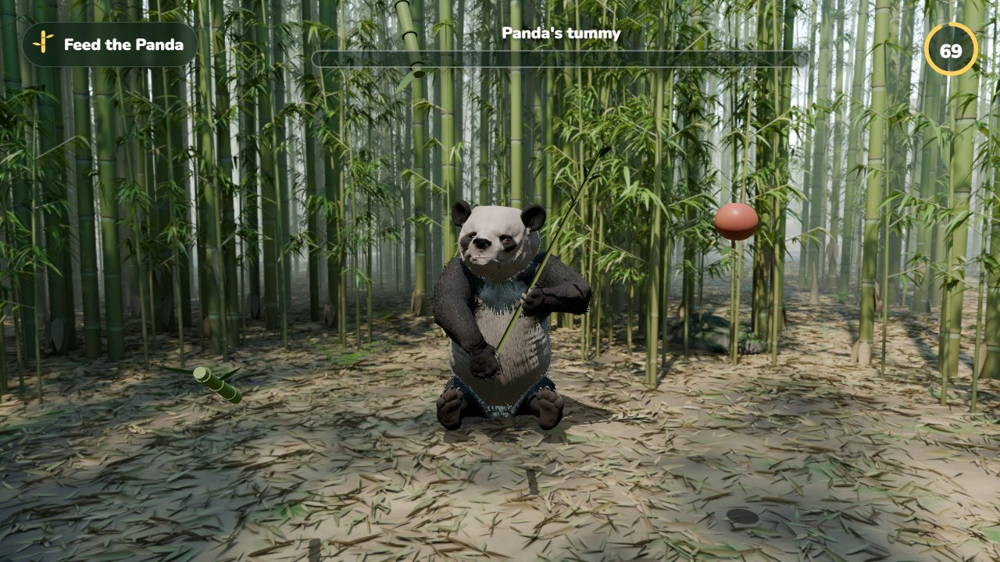
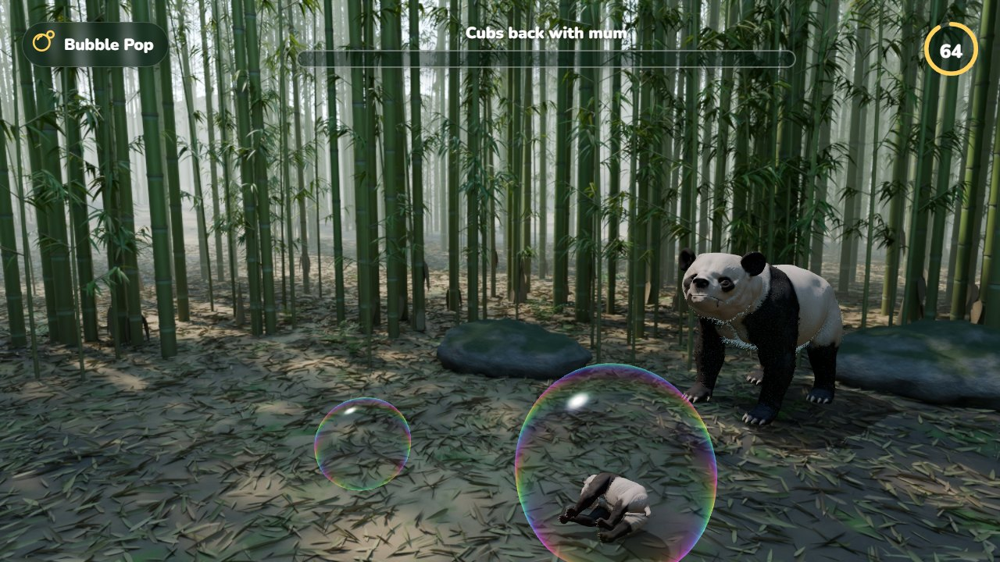
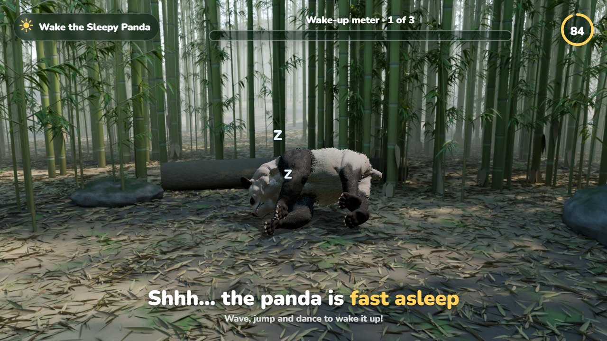

Three games for a party screen that you play with your body. A webcam tracks up to four children at once, both hands each, and pandas in a bamboo forest react to them. No controller and no touch. Further down: two 360° VR films from the same forest, and a camera-tracked wall game for a festival campaign.
Children wave to start. In Feed the Panda, bamboo, shoots and apples drop from the canopy, and anything a child touches flies to the panda, who munches it. In Bubble Pop, cubs float up inside soap bubbles; pop one and the cub drops, lands and toddles back to its mum. In Wake the Sleepy Panda, everyone waves, jumps and dances to fill a wake-up meter until the panda stirs, gets up, yawns and looks at them, then dozes off again.



Pose tracking runs on its own thread in a Web Worker, with GPU and CPU fallback. On an RTX 3060 the game draws about 115 frames a second and tracks about 21 times a second; on integrated graphics it holds about 55 frames. The paws glide between camera frames so movement looks smooth.
The forests are Blender-rendered plates. The pandas are live three.js models with a scripted head, eyelids and jaw, prepared in Blender by my own scripts. The whole thing ships as a full-screen offline Windows app that restarts itself if a page crashes and keeps the screen awake, so a venue can just switch it on.
Panda model: "Giant Panda" by Animal Animator, CC BY 4.0.
Two 30-second 360° films for children on a Meta Quest, from the same pandas. The viewer stands in the middle of a clearing at a child's eye height, with something happening in every direction: a mother panda eating bamboo, cubs batting a beach ball, a cub swinging from a branch, a peekaboo cub behind a bush. Panda Grove is a cartoon world; Panda Forest is a misty, lifelike bamboo forest with sleeping and wandering pandas.
Both are built entirely by my own Blender scripts, from the scene to the soundtrack, with the chewing sounds timed to the jaw. They render at 4096 by 2048 and loop seamlessly, and the frames were split between two PCs to cut render time. A last step writes the 360° metadata so headsets and YouTube play them as VR.
Two camera-tracked games for a brand's Festival of Lights campaign, made for a screen inside a stand at the venue. People wave to start and hold a hand over a game to pick it. In the first, your hand becomes a sparkler: hold it on each unlit oil lamp on a tiered stand to light all nine, then flick upward for fireworks. In the second, you float eleven lamps down a river at night and send lanterns into the sky.
They run in the browser with MediaPipe hand tracking and three.js, and fall back to plain movement when the tracker loses a fast hand. They lay themselves out for a vertical screen, a kiosk, a totem or a TV on its side, without any setting. The logo on screen is the client's.